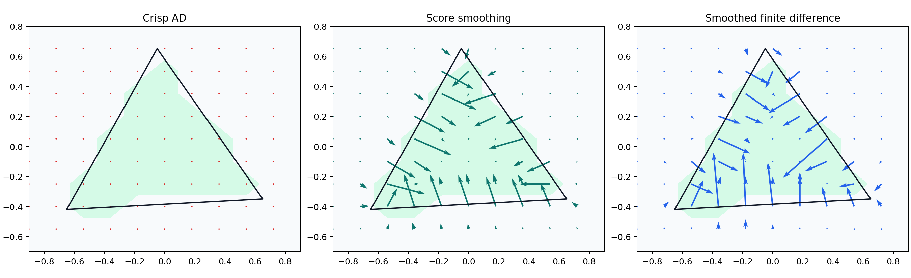
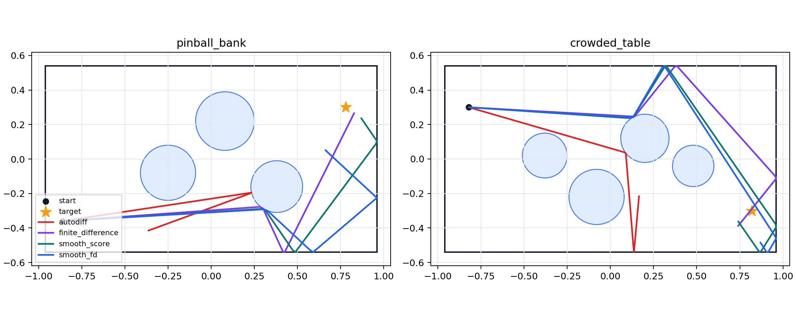
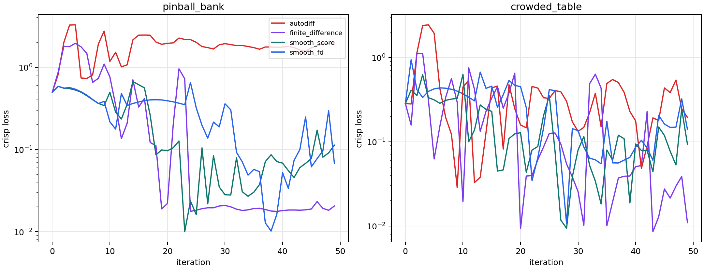
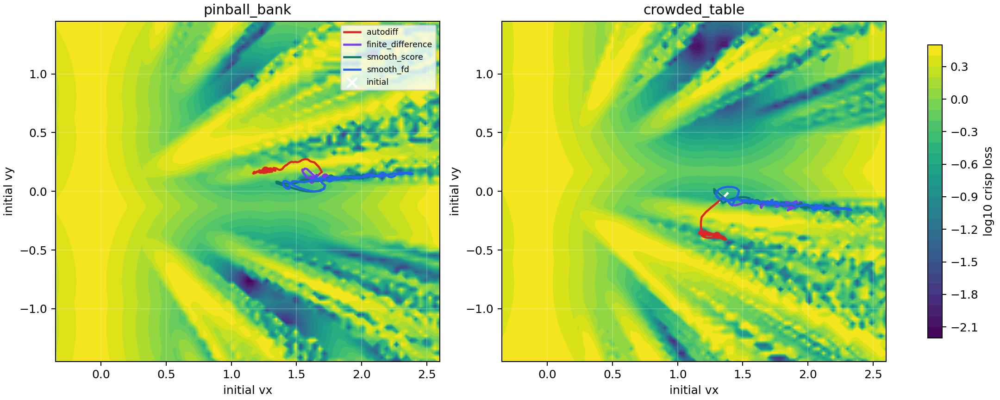
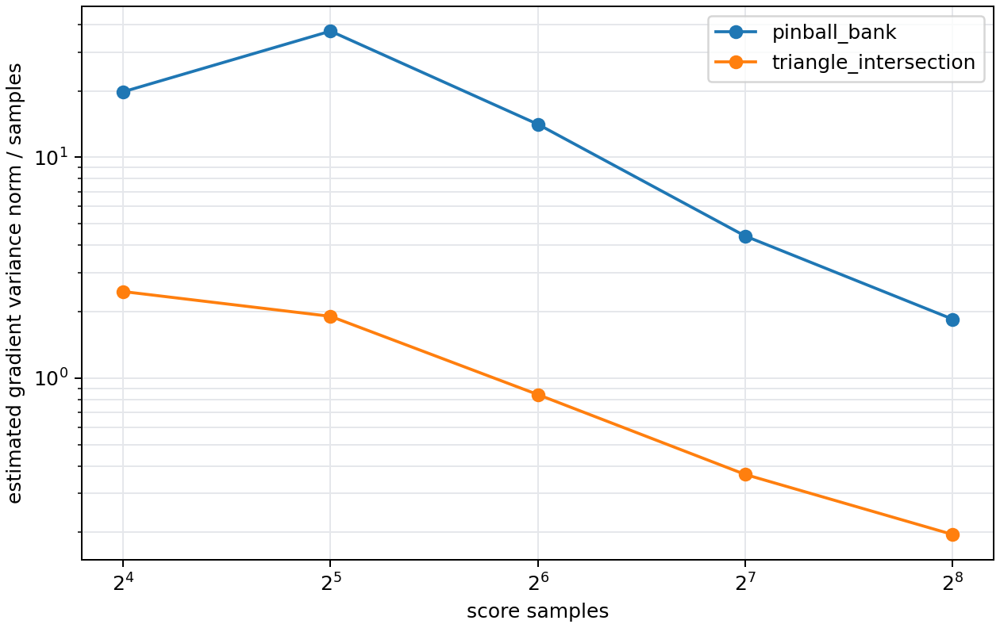
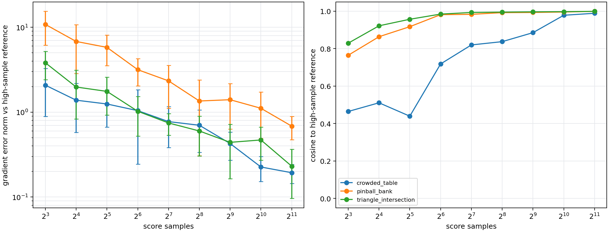
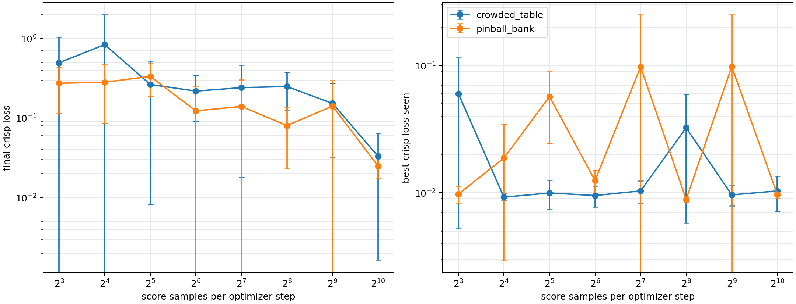
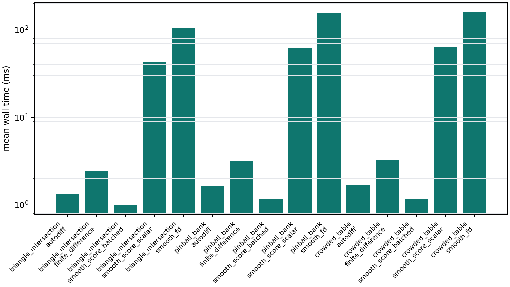

DiscoGrad-style program smoothing in Warp
All reportsI implemented a small Warp helper module for Gaussian program smoothing and evaluated it on branch-heavy objectives. On the hard triangle intersection problem, ordinary AD and crisp finite differences report zero gradient at branch-boundary probes, while the score-function smoother and smoothed finite differences recover clear boundary-normal signal. The follow-up run uses CUDA and a batched score estimator, launching one Warp kernel over all perturbation samples. On the 2D collision tasks, crisp AD is fast but unstable because it follows one collision path; smoothed estimators are slower but provide gradients with branch-aware behavior.
1. Method
DiscoGrad smooths branchy programs by differentiating a Gaussian-smoothed objective rather than a single crisp
execution path. The Warp prototype follows that idea without source-to-source transformation: users provide a
scalar Warp loss function and parameter arrays, and warp.optim.smoothing estimates gradients using
pathwise AD over perturbed executions, score-function Gaussian smoothing, or common-random-number finite
differences. The new batched score path accepts a loss function over a leading sample dimension, so score samples
run in parallel on CUDA instead of as a Python loop. The score-function estimator is still slower than a single
Tape pass but it can see discontinuities that pathwise AD ignores.
import warp.optim
result = warp.optim.smoothing.estimate_score_function_batched(
batched_loss_fn, [params], sigma=0.07, samples=128, seed=17
)
optimizer.step(result.gradients)This is close in spirit to Suh, Pang, and Tedrake's bundled gradients: both optimize a randomized-smoothed objective by averaging information in a neighborhood of the current state. The first-order bundled-gradient variant averages local derivatives, which is most useful when each sampled branch has meaningful derivatives. The zero-order bundled-gradient variant uses sampled values; this report's score estimator is the same practical choice for hard branch indicators and discontinuous collision events where pathwise derivatives can be zero or misleading.
2. Triangle Distance and Intersection
The triangle objective uses Warp kernels for a hard inside/outside intersection indicator and a squared outside distance. For the intersection indicator, the crisp program is piecewise constant: both AD and ordinary finite differences are zero unless the finite-difference step happens to cross an edge. Smoothing turns the edge into a finite-width probability transition and recovers useful gradients near the boundary.

Green indicates the triangle interior. Arrows are gradients with respect to the queried point.
3. Billiards-Style Collision Optimization
The collision examples optimize the initial velocity of a point ball inside a rectangular table with circular bumpers. The simulated loss is final squared distance to a target plus a small speed penalty. Collisions are branchy: small velocity changes can alter which obstacle is hit and when.



Velocity-space landscapes show narrow low-loss bands and branch-induced discontinuities. Lines are optimizer paths.
4. Sample Count and Benchmarks
The score estimator's standard error falls as the sample count increases. With batched CUDA sampling, the wall time grows slowly across the tested range, so the main tradeoff is estimator quality rather than launch overhead. In these probes, 64-128 samples are enough for the triangle and pinball gradient direction to become stable, while the crowded collision case benefits from 512-1024+ samples.




5. Limitations
- The CUDA build used Toolkit 12.6 with MathDx disabled. These examples do not use Warp tile MathDx operations.
- The batched score estimator parallelizes perturbed loss evaluation, but gradient reduction is still performed on the host after copying per-sample losses.
- This is a DiscoGrad-style smoothing utility, not a full DiscoGrad source transformer. It does not automatically instrument branch conditions inside arbitrary kernels.
warp/examples/optim/example_program_smoothing.py.